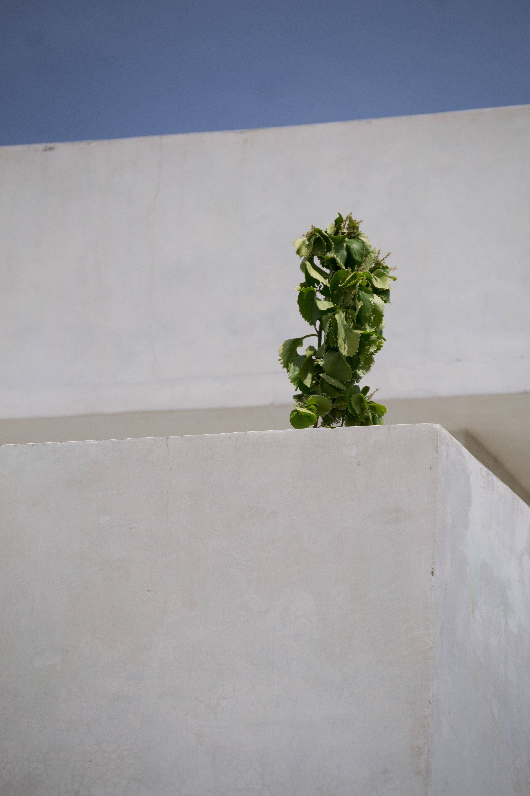
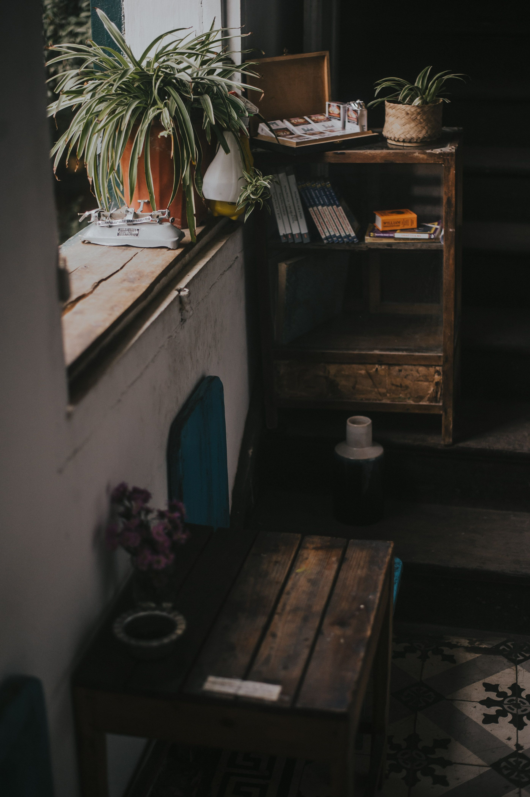

En este artículo
Introducción
Aprende a mejorar la iluminación natural de casa con una mejor distribución, cortinas adecuadas, colores claros, espejos y hábitos sencillos.
Antes de realizar cambios conviene observar las condiciones reales del espacio, definir qué problema quieres resolver y priorizar las medidas de mayor impacto. Esta planificación evita compras impulsivas y soluciones difíciles de mantener.
En esta guía se mantiene la estructura editorial de Casa & Jardín: introducción, tres bloques principales, consejos prácticos, imágenes internas, preguntas frecuentes y una conclusión útil. Cada recomendación está pensada para aplicarse de forma gradual.
Cuando una intervención implique instalaciones, estructura, trabajos en altura o productos potencialmente peligrosos, utiliza siempre métodos seguros y recurre a un profesional cualificado cuando sea necesario.
Aprovecha mejor las ventanas y la entrada de luz
Antes de comprar lámparas o pintar paredes, conviene observar cómo entra la luz natural en cada habitación. La orientación de las ventanas, la altura de los edificios cercanos, la presencia de árboles y el tamaño de los huecos determinan cuánta claridad recibe una vivienda y durante qué horas. Haz esta observación por la mañana, al mediodía y por la tarde para entender qué zonas están más favorecidas y cuáles necesitan apoyo.
El primer paso suele ser retirar obstáculos innecesarios frente a las ventanas. Un armario alto, una estantería profunda o una planta demasiado voluminosa pueden bloquear una parte importante de la luz. Reorganizar estos elementos puede producir una mejora inmediata sin gastar dinero. La idea no es dejar las ventanas completamente vacías, sino evitar que objetos sólidos interrumpan la trayectoria de la luz hacia el interior.
Las cortinas deben abrirse por completo cuando se busca aprovechar claridad. Si la barra termina exactamente sobre el marco, parte de la tela puede seguir cubriendo el cristal incluso cuando está recogida. Una barra ligeramente más ancha permite desplazar la cortina hacia los lados. También conviene elegir sistemas fáciles de abrir, porque una solución complicada termina permaneciendo cerrada durante más tiempo.
Los cristales sucios reducen la cantidad de luz que atraviesa la ventana. Una limpieza periódica de vidrio, marcos y persianas mejora la entrada de claridad y además permite revisar juntas, condensación y pequeños daños. Utiliza productos compatibles con el material del marco y evita trabajos en altura sin medidas de seguridad.
Si existen persianas, celosías o estores, ajusta su inclinación para redirigir la luz hacia el techo o las paredes en lugar de cerrarlos completamente. En muchas habitaciones, una posición intermedia permite conservar privacidad sin bloquear toda la claridad. Este equilibrio es especialmente útil en viviendas urbanas con edificios cercanos.
Las puertas interiores también pueden influir. Mantener abiertas las puertas entre espacios durante el día permite que la luz de una habitación más luminosa llegue a zonas interiores. En reformas, puertas con vidrio translúcido pueden ayudar a compartir luz sin perder privacidad, siempre que sean apropiadas para el espacio y cumplan requisitos de seguridad.
En pasillos y recibidores sin ventanas, aprovechar la luz de habitaciones adyacentes puede ser más efectivo que intentar iluminar únicamente con bombillas. Superficies claras, puertas abiertas y una distribución despejada ayudan a que la claridad avance más dentro de la vivienda.

Consejo práctico
Aplica los cambios de forma gradual y observa el resultado antes de continuar. Este método permite identificar qué medida funciona realmente y evita añadir tareas o gastos innecesarios.
Utiliza cortinas, colores y superficies que reflejen mejor la luz
Los tejidos de las cortinas modifican mucho la percepción de la luz. Un visillo claro puede filtrar el sol y reducir miradas desde el exterior sin oscurecer por completo. En dormitorios, puede combinarse con una segunda capa opaca para dormir. Este sistema permite adaptar la habitación según el momento del día en lugar de elegir entre luz total y oscuridad.
Los colores claros reflejan una mayor cantidad de luz. Pintar paredes en blanco roto, beige suave, gris claro o tonos pastel puede hacer que una habitación parezca más luminosa. Sin embargo, no es necesario que toda la casa sea blanca. Lo importante es evitar combinaciones demasiado oscuras en zonas que ya reciben poca luz, especialmente si no existen otras superficies reflectantes.
El techo merece atención especial. Un acabado claro puede reflejar la luz que entra por las ventanas y distribuirla mejor. Molduras, vigas o elementos muy oscuros pueden crear contraste y aportar carácter, pero también absorben parte de la claridad. Si el objetivo principal es iluminar, conviene mantener el techo relativamente luminoso.
Los muebles también influyen. Un sofá grande de tono muy oscuro frente a una ventana absorbe luz y aumenta el peso visual. No es necesario reemplazarlo, pero puedes equilibrarlo con alfombra, cojines o paredes más claras. En muebles nuevos, considera el efecto del color y del acabado sobre la luminosidad general.
Los espejos pueden ayudar cuando reflejan una fuente de luz. Colocarlos frente o en diagonal a una ventana puede distribuir claridad y crear sensación de profundidad. Antes de fijarlos, comprueba qué reflejarán desde distintos ángulos. Un espejo que reproduce una pared oscura o una zona desordenada tendrá menos efecto.
Superficies satinadas, vidrio, cerámica clara y algunos metales también reflejan luz, pero deben utilizarse con moderación. Demasiadas superficies brillantes pueden generar reflejos molestos. El objetivo es crear rebotes suaves, no convertir la habitación en un espacio deslumbrante.
En cocinas, frentes claros y encimeras de tonos medios o luminosos pueden mejorar la sensación de claridad. En baños pequeños, un espejo amplio y revestimientos que reflejen parte de la luz ayudan a que el espacio se sienta menos cerrado.
¿Qué debemos tener en cuenta?
Aplica los cambios de forma gradual y observa el resultado antes de continuar. Este método permite identificar qué medida funciona realmente y evita añadir tareas o gastos innecesarios.
Mejora la distribución y los hábitos para conservar la claridad
La distribución de los muebles debe permitir que la luz recorra la habitación. Las piezas más altas suelen funcionar mejor en paredes perpendiculares o alejadas de las ventanas. Colocar un armario grande justo frente al hueco puede crear una sombra extensa. Antes de mover, dibuja un plano simple y prueba posiciones sin bloquear recorridos.
Las estanterías abiertas permiten pasar algo de luz a través de sus huecos, pero si están completamente llenas se convierten en un bloque. Alternar libros y objetos con espacios vacíos ayuda a mantener ligereza visual. En zonas oscuras, una estantería baja puede ser mejor que una estructura alta.

Las plantas también deben colocarse según sus necesidades de luz. Una planta grande puede funcionar cerca de una ventana si no bloquea el paso de claridad hacia el resto del espacio. Las especies pequeñas pueden agruparse en estantes laterales. No sacrifiques la salud de la planta solo para seguir una composición decorativa.
En habitaciones estrechas, mantener el suelo visualmente despejado ayuda a que la luz alcance más superficies. Muebles con patas visibles, mesas ligeras y almacenamiento vertical bien colocado pueden aportar sensación de amplitud. Sin embargo, la función sigue siendo prioritaria: un mueble cerrado puede ser mejor si evita acumulación visual.
La limpieza y el orden tienen efecto directo sobre la percepción de luz. Superficies llenas de objetos producen sombras pequeñas y aumentan ruido visual. Despejar encimeras, mesas y alféizares hace que la claridad se perciba de forma más uniforme.
Si una habitación recibe poca luz natural por condiciones estructurales, no intentes resolver todo con trucos decorativos. Combina las mejoras posibles con iluminación artificial bien distribuida. Varias fuentes suaves pueden complementar la luz diurna sin crear contrastes fuertes.
Una vivienda luminosa no depende únicamente del tamaño de sus ventanas. Distribución, color, limpieza, tejidos y hábitos diarios pueden aumentar mucho la sensación de claridad. La mejor estrategia es observar qué bloquea o absorbe luz y corregir esos puntos de forma gradual.
Recomendaciones prácticas
Aplica los cambios de forma gradual y observa el resultado antes de continuar. Este método permite identificar qué medida funciona realmente y evita añadir tareas o gastos innecesarios.
Cómo mejorar la luz natural según cada habitación
En el salón, la prioridad suele ser mantener despejada la zona de ventanas y distribuir los muebles para que la claridad pueda llegar al centro. Si el sofá debe quedar cerca de una ventana, intenta que su respaldo no supere demasiado la altura del alféizar. Las mesas auxiliares ligeras y los muebles bajos ayudan a conservar una vista más abierta.
En el dormitorio, la luz natural debe combinarse con privacidad y descanso. Una doble cortina permite aprovechar claridad durante el día y oscurecer por la noche. Evita colocar el armario en una pared donde bloquee parte de la ventana o cree una sombra importante. Si el dormitorio es pequeño, una paleta clara puede reforzar la sensación de amplitud.
En la cocina, mantener despejado el alféizar y utilizar frentes claros mejora la distribución de luz. Si existen muebles altos junto a una ventana, evita que sobresalgan demasiado sobre el hueco. Una superficie de trabajo bien iluminada de forma natural resulta más cómoda durante el día y reduce la necesidad de encender luces artificiales.
En el baño, el espejo puede ayudar a reflejar claridad si está bien ubicado. Los revestimientos claros y las mamparas transparentes mantienen continuidad visual. Si la ventana necesita privacidad, un vidrio translúcido o un estor adecuado puede permitir la entrada de luz sin dejar el interior expuesto.
Los pasillos interiores suelen ser los espacios más difíciles. Mantener abiertas las puertas cercanas durante el día, utilizar paredes claras y colocar espejos en puntos estratégicos puede ayudar. Si una reforma es posible, puertas con paneles translúcidos pueden compartir luz entre habitaciones.
Errores frecuentes que reducen la luz natural
Uno de los errores más comunes es colocar demasiados muebles altos cerca de las ventanas. Aunque cada pieza por separado parezca razonable, el conjunto puede crear una barrera que limita la entrada de luz y hace que la habitación se sienta más cerrada.
Otro error es elegir cortinas muy pesadas para habitaciones que ya reciben poca luz. Si necesitas privacidad, utiliza un sistema de capas en lugar de un tejido opaco durante todo el día. También conviene evitar barras demasiado cortas que no permitan recoger completamente la cortina.
Pintar una habitación oscura con muchos colores intensos puede añadir personalidad, pero también reducir la sensación de claridad. Si deseas utilizar un tono profundo, reserva una pared concreta y equilibra con techo, textiles y muebles más claros.
Los espejos colocados sin planificación pueden reflejar zonas oscuras o crear deslumbramiento. Antes de fijarlos, muévelos temporalmente y comprueba el resultado en diferentes horas. Una buena ubicación depende de la trayectoria real de la luz.
También es frecuente olvidar la limpieza de cristales y persianas. Una capa de polvo y suciedad reduce transparencia y claridad. Incorporar la limpieza de ventanas a la rutina de mantenimiento puede producir una mejora perceptible.
Mantener una casa luminosa con hábitos sencillos
Una vivienda puede perder luminosidad gradualmente a medida que se acumulan objetos. Revisar alféizares, estanterías y zonas próximas a ventanas cada pocos meses ayuda a evitar que la entrada de luz se bloquee sin darte cuenta.
Las plantas grandes necesitan poda y rotación cuando crecen hacia el cristal. No cortes por estética únicamente, pero sí controla que hojas y ramas no cubran por completo la ventana. Si una planta necesita tanta luz que ocupa todo el hueco, considera otro lugar donde no interfiera con el resto de la habitación.
Revisa cortinas y estores para que abran con facilidad. Un mecanismo que se atasca o una tela excesivamente larga termina utilizándose mal. Ajustar estos pequeños detalles facilita aprovechar la luz todos los días.
Cuando cambies muebles, vuelve a evaluar la distribución. Un sofá nuevo o una estantería más alta puede modificar por completo cómo circula la luz. No asumas que la posición anterior seguirá funcionando igual.
Si una habitación continúa demasiado oscura pese a estas mejoras, complementa con iluminación artificial bien distribuida. El objetivo es crear una sensación equilibrada durante todo el día, no forzar una cantidad de luz natural que la arquitectura no puede ofrecer.
Preguntas frecuentes
¿Qué color refleja mejor la luz natural?
Los tonos claros suelen reflejar más luz, especialmente blancos suaves, beige y grises claros. El resultado también depende del acabado y de la orientación de la habitación.
¿Los espejos ayudan a iluminar una habitación?
Sí, especialmente cuando reflejan una ventana o una pared luminosa. La posición es más importante que la cantidad.
¿Qué cortinas dejan pasar más luz?
Los visillos y tejidos ligeros permiten filtrar la luz sin bloquearla por completo. Pueden combinarse con cortinas opacas cuando se necesita oscuridad.
¿Cómo iluminar un pasillo sin ventanas?
Aprovecha la luz de habitaciones cercanas, utiliza colores claros y complementa con iluminación artificial distribuida.
¿Merece la pena pintar el techo de claro?
En muchos casos sí, porque un techo claro ayuda a reflejar luz y puede mejorar la sensación de altura.
Conclusión
Cómo mejorar la iluminación natural de casa funciona mejor cuando las decisiones parten de las condiciones reales del espacio y pueden mantenerse con una rutina sencilla.
La constancia suele ofrecer mejores resultados que las intervenciones intensas realizadas solo cuando aparece un problema.
Revisa el resultado después de varias semanas y ajusta únicamente aquello que siga siendo incómodo, poco práctico o difícil de mantener.
Con planificación y mantenimiento preventivo es posible conseguir un resultado más cómodo, funcional y duradero.